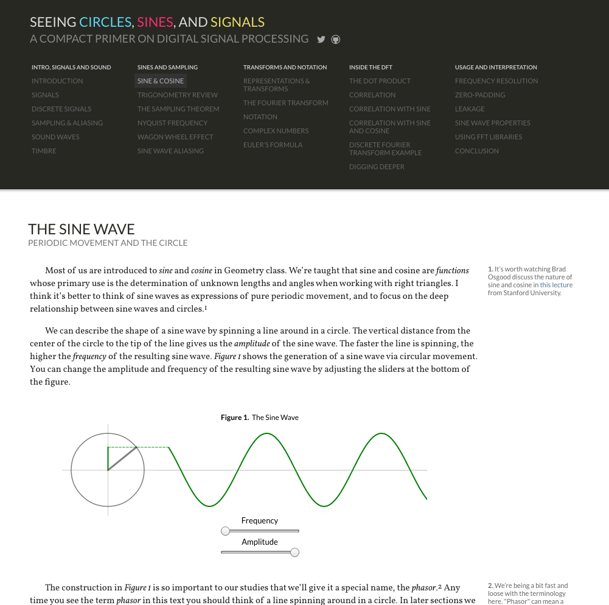
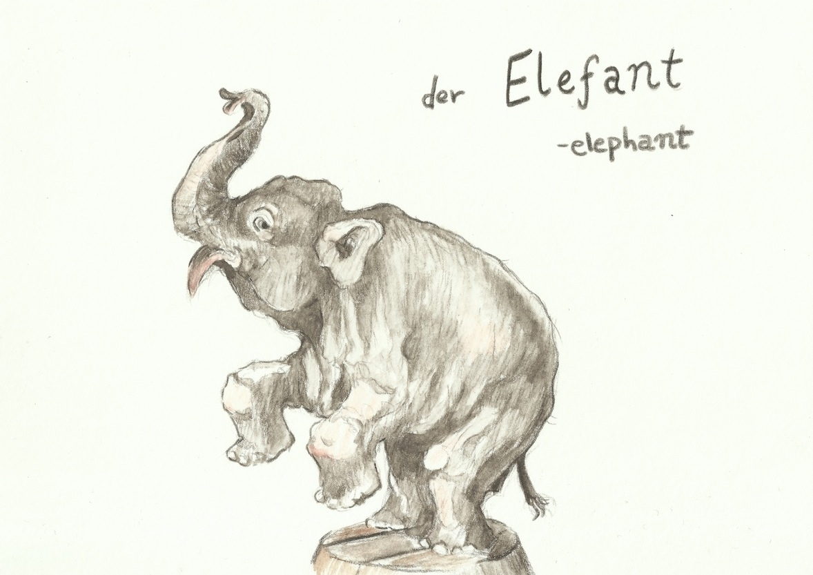
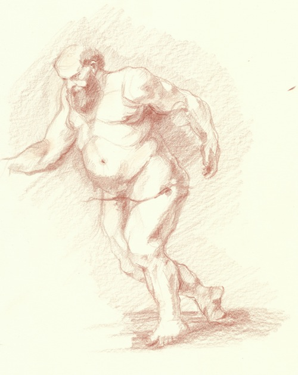

Seeing Circles, Sines, and Signals
An interactive and visual introduction to
digital signal processing and the Fourier transform

digital signal processing and the Fourier transform
The Audio Processing Dog House

An illustrated article for the
online magazine objc.io
online magazine objc.io
Postcards From Berlin
Small watercolors and short asides
about language and living in Germany

about language and living in Germany
Goya

A web-based pixel art editor written in ClojureScript
to explore the usage of immutable data structures
to explore the usage of immutable data structures
After the Masters
Sketches in pencil, ink, and oil
Mostly Studies and copies after the Old Masters

Mostly Studies and copies after the Old Masters